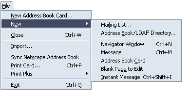
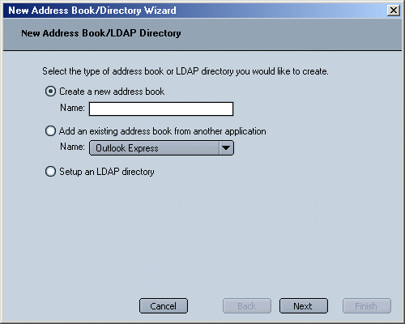
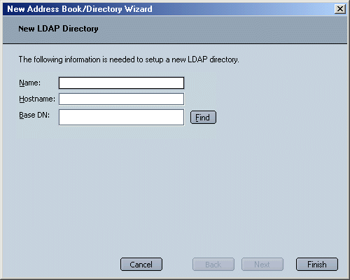
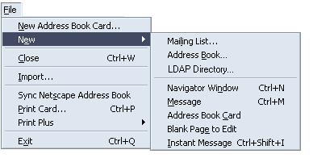
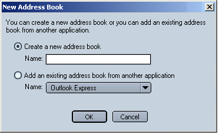

|
MachV/Mozilla: Mail |
UI Proposal
|
|
New AB/LDAP Directory |
Last
Modification:
|
|
Author: Jennifer Glick |
Status: Draft |
||||||||||
|
Quicklinks: |
Feature Team:
Please post all comments and suggestions regarding this spec to the newsgroup, netscape.public.mozilla.mail-news. |


If the user selects "Create a new address book" the "Name" field below it becomes enabled. The Next button is disabled and the "Finish" button is enabled.
If the user selects "Add an existing address book from another application", the "Name" menu below it becomes enabled. The Next button is disabled and the "Finish" button is enabled.
If the user selects "Setup an LDAP directory", the Finish button is disabled and the Next button is enabled.


'

Each New menu item would open an appropriate different dialog.


Once an address book or LDAP directory is added to the Address Book window, it is now available for use in other areas of the product, such as autocomplete or certificate look up.
If a new or external address book is added to the Address Book window, the AB should be included in autocomplete if the "Local Address Books" setting is checked.
Once an LDAP directory has been added to the Address Book window, it should appear in the "Directory Server" drop down list in Preferences.

When clicking on "Edit Directories...", it should also now appear in the "LDAP Directory Servers" dialog.

Conversely, if a user adds a new LDAP server using the "LDAP Directory Servers" dialog, the LDAP server should also appear in the Address Book window.